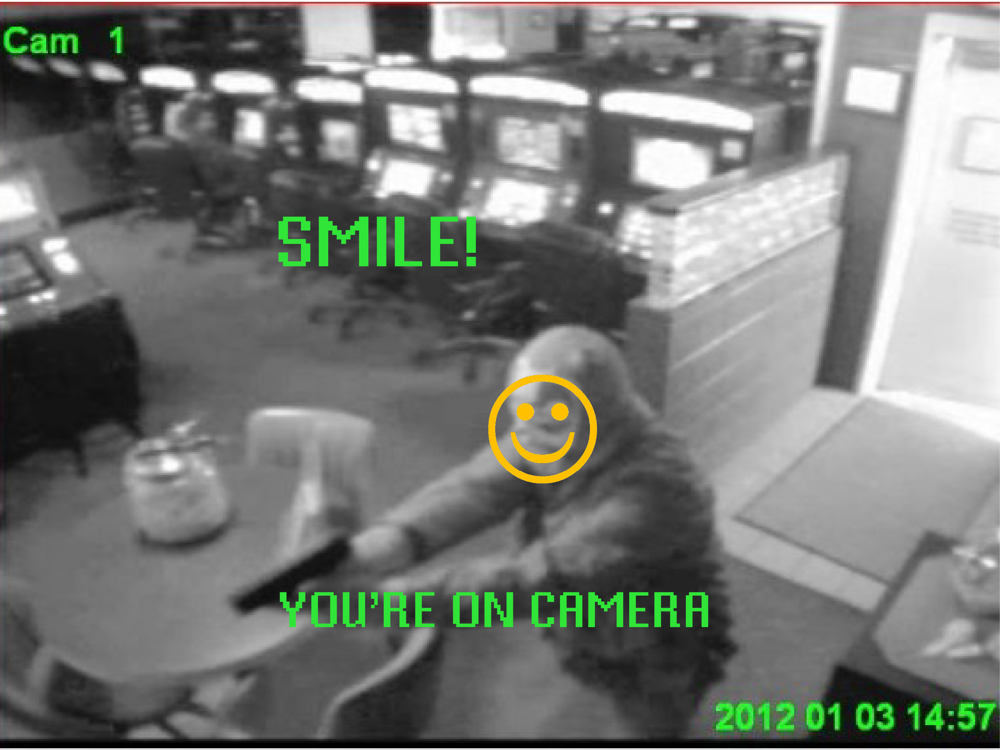
SMILE, YOU'RE ON CAMERA
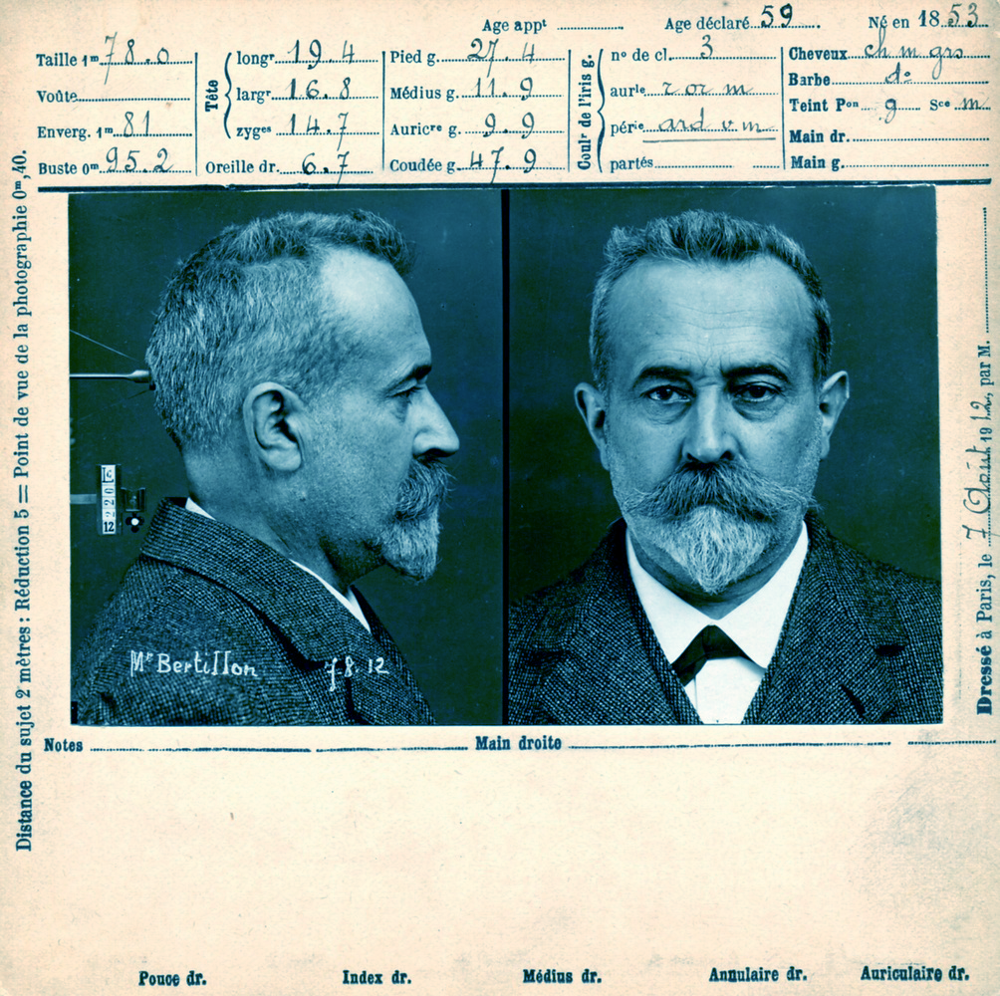
SAY CHEESE
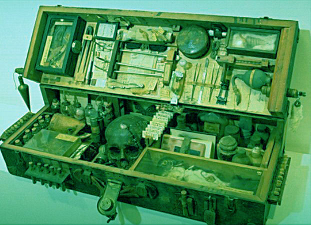
THE HANDY KIT
DNA
LUMINOL PRINT
GAZA HERBICIDAL WARFARE - FORENSIC ARCHITECTURE
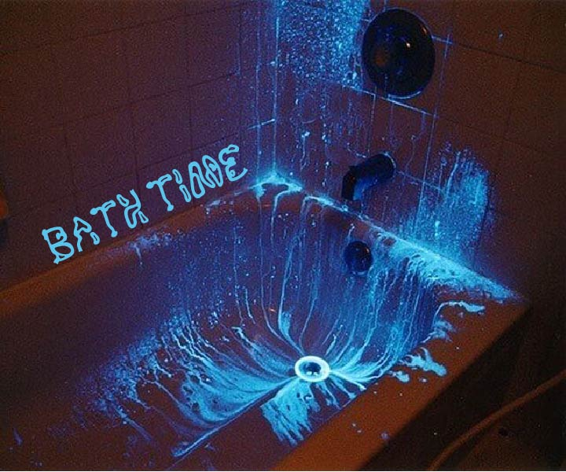
BATH TIME
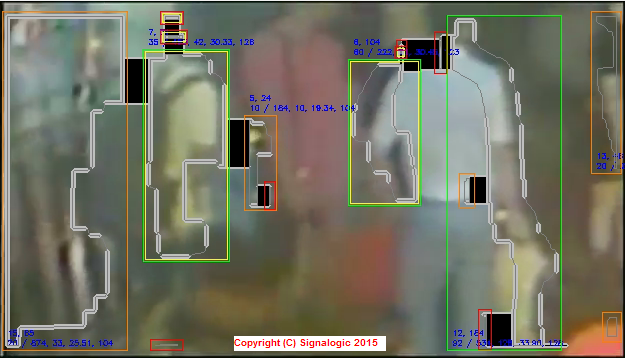
ALL ABOUT DETAILS
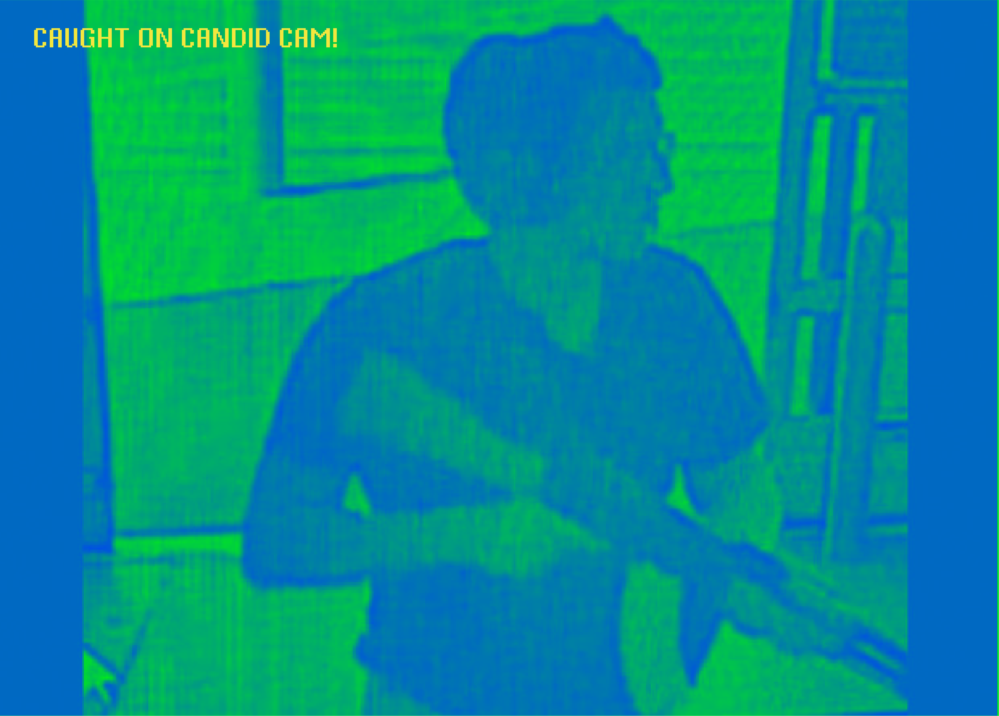
YOU'RE ON CANDID CAMERA!
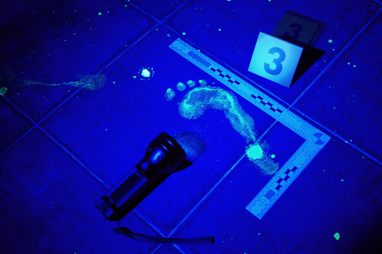
EVERY STEP YOU TAKE..
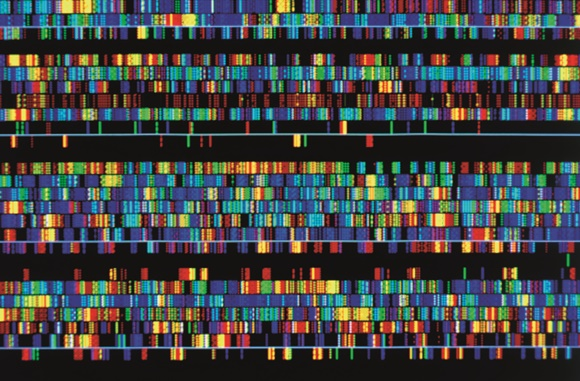
WE ARE ALL GENOMES
IN TODAY'S NEWS
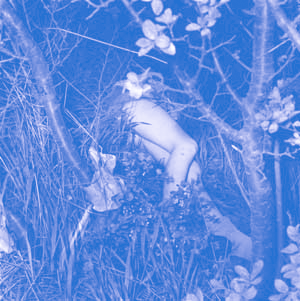
A GRIM DISCOVERY
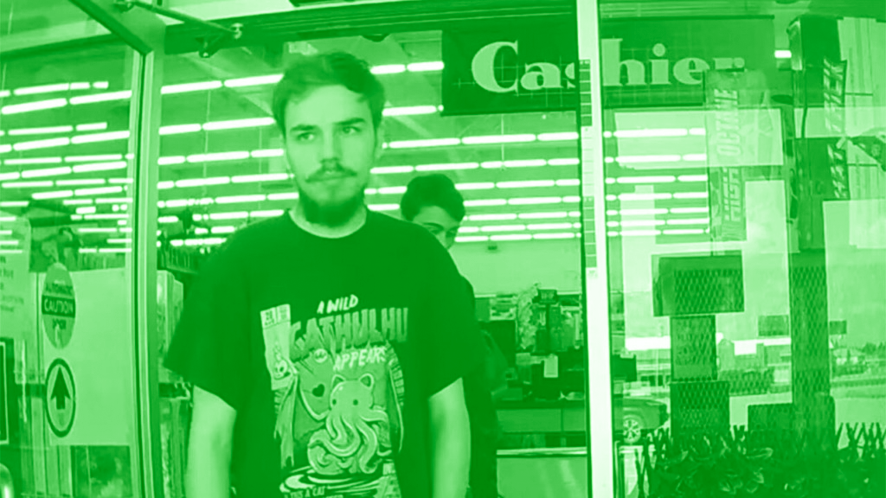
EVERYDAY EVIDENCE
MANY FACES
THE KILLING OF ROUZAN AL-NAJJAR - FORENSIC ARCHITECTURE
JUST BROWSING
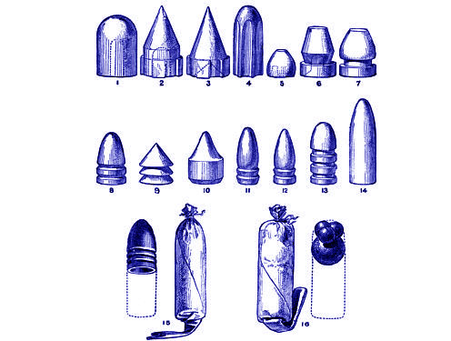
HISTORIC ILLUSTRATION
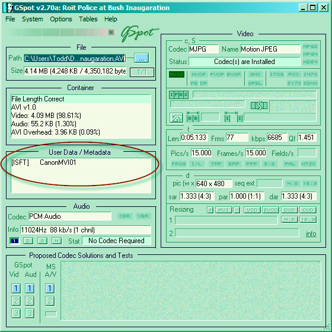
HACKING TIME
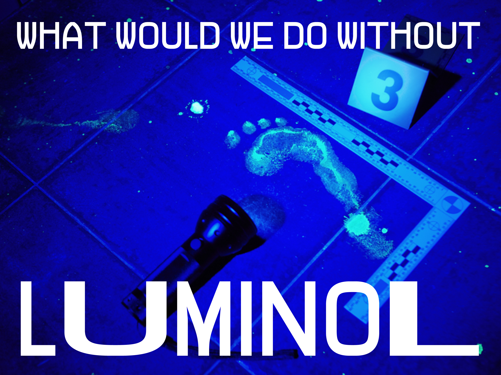
WHAT WOULD WE DO WITHOUT..
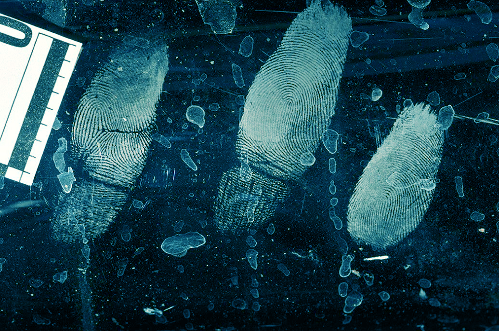
LEAVING A TRACE
THE MURDER OF PAVLOS FYSSAS - FORENSIC ARCHITECTURE